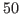
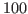

Large scale scientific computing models, requiring iterative algebraic solvers, are needed to simulate high-frequency wave propagation. This is because large degrees of freedom are needed to avoid the celebrated Helmholtz computer model pollution effects. Using low-order finite difference or finite element methods (FDM/FEM), such issues have been well investigated for low and medium frequency models (typically at most

wavelengths per diameter of the wave propagation domain). Standard FDM/FEM based discretizations of the time-harmonic Helmholtz wave propagation model lead to sign-indefinite systems with eigenvalues in the left half of the complex plane. Hence standard iterative methods (such as GMRES/BiCGstab) perform poorly, and additional techniques such as multigrid (MG) or decomposition of the domain are required for efficient and practical simulation of high-frequency FDM/FEM Helmholtz models. In this work, we investigate the use of multiple additive Schwarz type domain decomposition (DD) approximations to efficiently simulate high-frequency wave propagation with high-order FEM. We compare our DD based results with those obtained using a standard geometric MG approach for over
wavelength models.